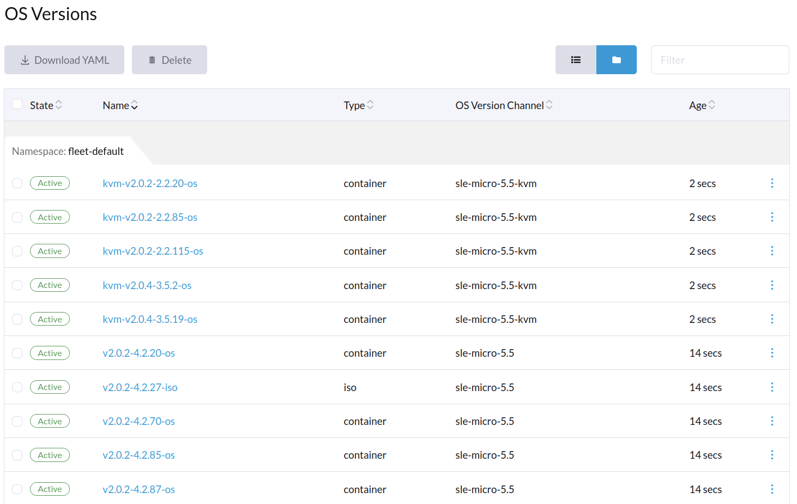

|
Este documento foi traduzido usando tecnologia de tradução automática de máquina. Sempre trabalhamos para apresentar traduções precisas, mas não oferecemos nenhuma garantia em relação à integridade, precisão ou confiabilidade do conteúdo traduzido. Em caso de qualquer discrepância, a versão original em inglês prevalecerá e constituirá o texto official. |
Canais
O SUSE® Rancher Prime: OS Manager Operator permite a assinatura de um ou mais ManagedOSVersionChannels, para preencher automaticamente uma lista de ManagedOSVersions prontas para serem consumidas para construir novas ISOs usando uma SeedImage, ou para atualizar nós existentes, para novas versões do SO usando a ManagedOSImage.
Um canal é normalmente distribuído como uma imagem de contêiner OCI, mas também é possível referenciar a URI de um arquivo JSON que contém diretamente uma lista de ManagedOSVersion. Observe que a melhor prática é distribuir canais usando imagens, para que a distribuição seja consistente com todas as outras imagens necessárias pelo SUSE® Rancher Prime: OS Manager Operator. Isso pode ser benéfico, por exemplo, ao implantar em um ambiente isolado.
-
Sincronizador JSON
-
Sincronizador personalizado
Esse sincronizador buscará um JSON de uma URL e o analisará em recursos válidos de ManagedOSVersion.
apiVersion: elemental.cattle.io/v1beta1
kind: ManagedOSVersionChannel
metadata:
name: elemental-versions
namespace: fleet-default
spec:
options:
URI: "https://raw.githubusercontent.com/rancher/elemental-product-docs/main/docs/1.8/modules/en/examples/upgrade/versions.json"
Timeout: "1m"
type: jsonUm sincronizador personalizado permite mais flexibilidade sobre como reunir ManagedOSVersion ao permitir comandos personalizados com imagens personalizadas. Esse tipo de sincronizador permite executar um comando específico com argumentos e variáveis de ambiente em uma imagem personalizada e gerar um arquivo JSON para /data/output. Os dados gerados são então montados automaticamente pelo sincronizador e, em seguida, analisados para que possam criar as versões apropriadas. O projeto SUSE® Rancher Prime: OS Manager fornece canais para listar todos os ManagedOSVersions lançados como um sincronizador personalizado. Veja a definição do recurso do canal abaixo:
apiVersion: elemental.cattle.io/v1beta1
kind: ManagedOSVersionChannel
metadata:
name: elemental-channel
namespace: fleet-default
spec:
options:
image: registry.suse.com/rancher/elemental-channel:latest
type: customCanais Disponíveis
SUSE® Rancher Prime: OS Manager mantém uma lista de canais que podem ser usados diretamente.
| SO Base | Versão do BaseOS | Sabor | URI do Canal |
|---|---|---|---|
SL Micro |
6.1 |
Base |
registry.suse.com/rancher/elemental-channel/sl-micro:6.0-base |
SL Micro |
6.1 |
Bare-metal |
registry.suse.com/rancher/elemental-channel/sl-micro:6.0-baremetal |
SL Micro |
6.1 |
KVM |
registry.suse.com/rancher/elemental-channel/sl-micro:6.0-kvm |
SL Micro |
6.1 |
RT |
registry.suse.com/rancher/elemental-channel/sl-micro:6.0-rt |
Encontrando SUSE® Rancher Prime: OS Manager canais
O Crane pode ser usado para encontrar os canais mantidos. Por exemplo:
$ crane ls -O registry.suse.com/rancher/elemental-channel/sl-micro
6.0-baremetal
6.0-base
6.0-kvm
6.0-rt
6.1-baremetal
6.1-base
6.1-kvm
6.1-rt
<snip>Sabores
SUSE® Rancher Prime: OS Manager distribui diferentes sabores de SO que podem se adequar melhor a casos de uso específicos.
| Sabor | Descrição | Referência |
|---|---|---|
Base |
Uma imagem mínima que pode ser usada como base para construir imagens personalizadas. |
|
Bare-metal |
Contém pacotes bare-metal e de usabilidade. Pode ser usado para qualquer carga de trabalho genérica. |
|
KVM |
Pronto para ser usado com KVM. Contém o agente QEMU Guest por padrão. |
|
RT |
Como imagens bare-metal, mas inclui um kernel em tempo real. |
Ciclo de vida dos canais e melhores práticas
Uma vez que um novo ManagedOSVersionChannel é criado, o SUSE® Rancher Prime: OS Manager Operator irá sincronizar periodicamente a lista JSON do canal fornecido e convertê-la em um novo ManagedOSVersions.
Todos os ManagedOSVersions sincronizados serão de propriedade do ManagedOSVersionChannel. Excluir o ManagedOSVersionChannel levará à exclusão de todos os ManagedOSVersions em cascata.
Observe que o ManagedOSVersionChannel suporta a limpeza automática de ManagedOSVersions que não estão mais sincronizados, quando a opção ManagedOSVersionChannel.spec.deleteNoLongerInSyncVersions está habilitada.
Quando um ManagedOSVersion é agendado para exclusão, um finalizador garantirá que não haja referência ativa em nenhum ManagedOSImage.
Se um ManagedOSVersion não puder ser excluído, você pode descobrir por quais recursos ele é referenciado:
kubectl -n fleet-default get managedosimages -l elemental.cattle.io/managed-os-version-name=my-deleted-os-versionAo usar múltiplos canais, é importante manter uma estratégia de nomenclatura adequada para sempre ter uma referência rápida e legível por humanos sobre o ManagedOSVersions possuído.
Recomenda-se nomear qualquer canal como: {BaseOS}-{BaseOSVersion}-{Flavor}.
Isso deve permitir que o usuário use o nome do ManagedOSVersion como a versão de build específica do SUSE® Rancher Prime: OS Manager da imagem, enquanto mantém uma referência sobre o SO Base e a versão do SO Base do canal pai.
Na interface do Rancher, isso parecerá algo como a imagem a seguir:

Criando seus próprios Canais
O único requisito para criar seu próprio sincronizador personalizado é fazê-lo gerar um arquivo JSON para /data/output e manter a estrutura JSON correta.
O arquivo é um array JSON contendo entradas de ISO e contêiner. Cada entrada no array é mapeada 1:1 com um objeto ManagedOSVersion.
Entradas de "type": "iso" devem conter um ISO SUSE® Rancher Prime: OS Manager inicializável e são usadas por SeedImages, enquanto entradas de "type": "container" são usadas por ManagedOSImage para atualizações de SUSE® Rancher Prime: OS Manager.
Em caso de dúvida, o projeto elemental-channels pode ser usado como uma implementação de referência sobre como construir e manter seus próprios canais.
Ao criar novas entradas, tenha cuidado com a estratégia de nomenclatura que você escolher, a fim de evitar colisões com outros canais, uma vez que eles podem acabar sincronizando diferentes ManagedOSVersion com o mesmo nome.
Uma boa prática é usar a convenção: {Flavor}-{Version}-{Type}
Um exemplo do formato JSON é o seguinte:
[
{
"metadata": {
"name": "my-flavor-v0.1.0"
},
"spec": {
"version": "v0.1.0",
"type": "container",
"metadata": {
"upgradeImage": "foo/bar-os:v0.1.0-myflavor",
"displayName": "Foo Bar OS - My Flavor"
}
}
},
{
"metadata": {
"name": "my-flavor-v0.1.0-iso"
},
"spec": {
"version": "v0.1.0",
"type": "iso",
"metadata": {
"uri": "foo/bar-iso:v0.1.0-myflavor",
"displayName": "Foo Bar ISO - My Flavor"
}
}
}
]